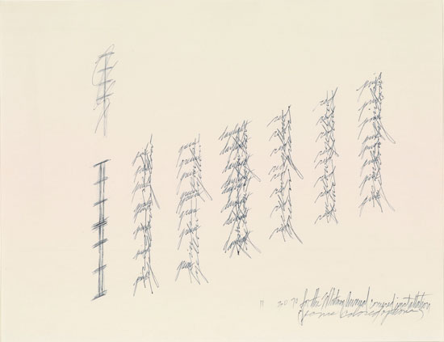
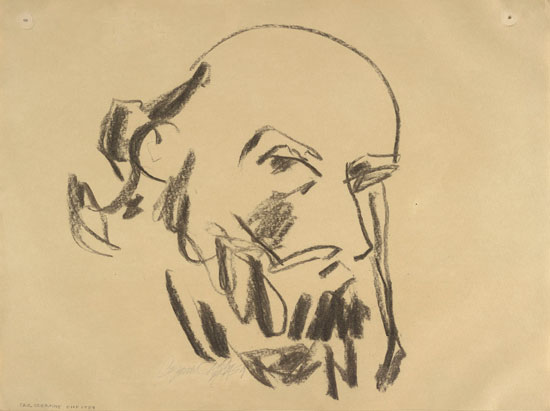
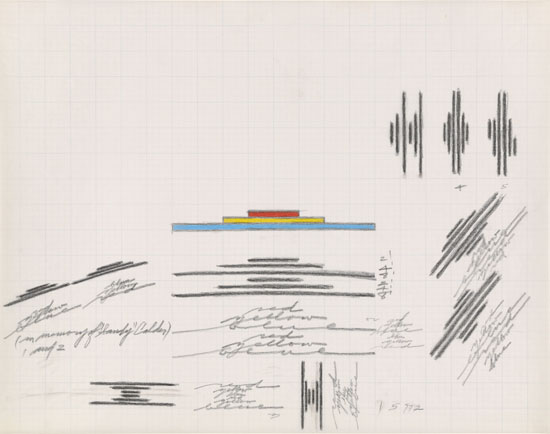

Dan Flavin
16 de marzo de 10.00h a 14.00h
Trayectoria
Primero, meteorólogo en las fuerzas aéreas, después repartidor de correos, y más tarde guardia de seguridad; es poco probable que un artista recorra caminos tan diferentes hasta llegar al arte, tal y como hizo Dan Flavin.
Obra
Para sus primeras creaciones, utilizó la acuarela, el collage y la fotografía.Más tarde comienza a trabajar con la luz, es conocido como «el escultor de la luz fluorescente»,sus esculturas transformaban la atmósfera donde se instalaban, a través de los efectos ópticos
Programación
Conferencia en homenaje a su vida y obra
Exposición de sus trabajos
Subasta
Obras en subasta


